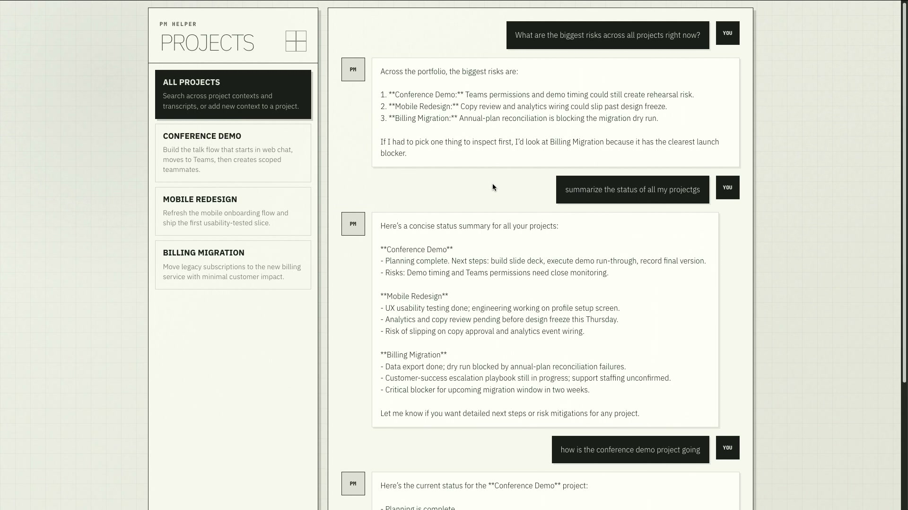
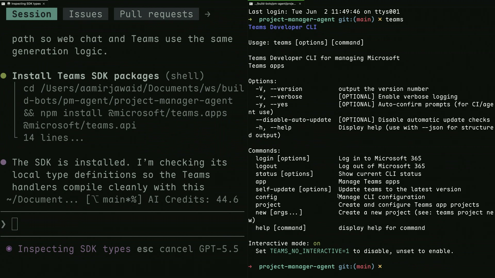
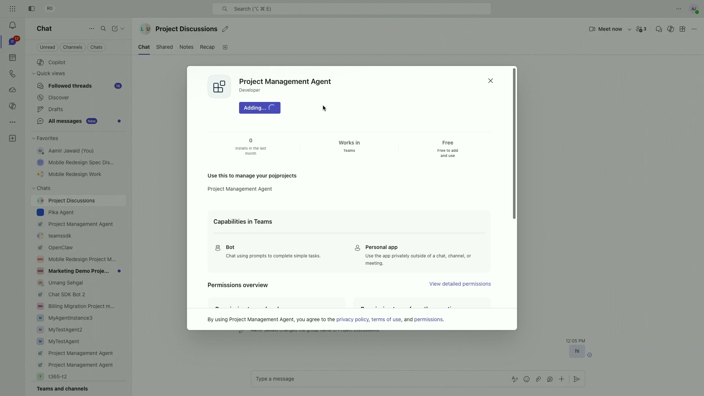
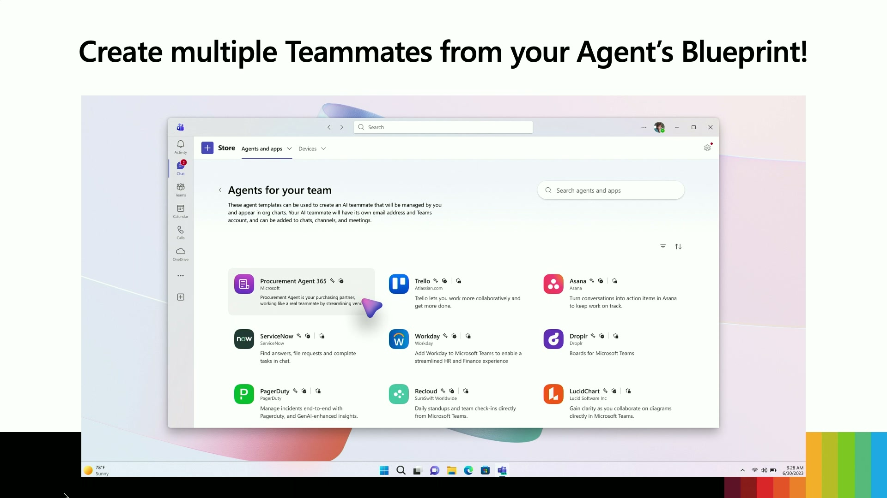

From zero to teammate in 25 minutes: Build a Teams agent live
Official description
In 25 minutes, flat, watch an agent come to life inside Microsoft Teams, one that works alongside you in the channels and chats you already use. Using the Teams CLI, the Teams SDK's new skills plugin, and GitHub Copilot, we'll go from blank terminal to a deployed agent your colleagues can @mention, delegate to, and collaborate with. No slideware, no shortcuts.
Summary
Overview
A live, slideware-free demonstration of building a Microsoft Teams agent from an empty terminal to a deployed, identity-bearing teammate in under 25 minutes. The session introduces the consolidated Teams SDK, a new agent-first Teams CLI, and a GitHub Copilot skills plugin, then shows how an agent graduates into an Agents 365 teammate that operates across the Microsoft 365 ecosystem.
Key announcements
- Teams SDK consolidation (00:01:18) — The previously separate Teams AI Library and tooling are unified into a single streamlined Teams SDK developer experience.
- New Teams CLI (00:07:47) — A command-line tool built from the ground up for both humans and coding agents, handling app registration, bot creation, secrets, and gluing the pieces together via
teams app create. - Teams dev agent skill for GitHub Copilot (00:06:54) — A Copilot skill that can call the Teams CLI and read the Teams docs to integrate an existing app into Teams from a single prompt.
- Progressive disclosure in the CLI (00:09:16) — Subcommands are revealed incrementally so an agent only loads context relevant to its current goal.
- JSON mode (00:10:34) — A
--jsonflag returns structured output for scripting and agent parsing instead of human-formatted text. - Group chat capabilities (00:14:19) — Emoji reactions, targeted/private messages, slash commands, quoted replies, suggested actions, markdown support, and source citations are coming to agents in group chats (dedicated session the following day at 11:50).
- Agents 365 teammate identity (00:16:02) — Agents can be given an agentic identity with their own alias and email, allowing them to live across Outlook, Word, Excel, PowerPoint, Teams, meetings, and group chats with added IT visibility, observability, permissions, and control.
Topics covered
- The traditional multi-step path to deploying a Teams agent (app registration, credentials, endpoint, manifest, environment configuration, bot startup) and the friction it creates.
- Three pillars: bringing any agent on any stack, frictionless scaffolding, and turning an agent into a true teammate.
- Live conversion of a standalone project-management web app into a deployed Teams agent.
- Designing a CLI for both interactive human use (arrow-key navigation) and agent consumption.
- Using an agent as a blueprint to spin up project-specific personas that carry context across M365.
- Agents sending email from their own identity without leaving Teams.
Notable quotes
"This year we're bringing to you the Teams SDK, which is the consolidation of all the libraries and tools that you use into one streamlined developer experience." — Umang Sehgal
"We're in the world of coding agents and CLI that is built for coding agents is what we are bringing to you." — Umang Sehgal
"It makes sure that your agent only fills up its context with things that it actually needs for its particular goal and not for useless things that it might not actually end up using." — Aamir Jawaid
Products and tools mentioned
- Microsoft Teams
- Teams SDK
- Teams AI Library (TypeScript and C#)
- Teams CLI
- GitHub Copilot
- Teams dev agent skill
- Agents 365 / Microsoft 365
- Microsoft Outlook, Word, Excel, PowerPoint
- Azure AI Foundry [inferred]
- Vercel [inferred]
- CrewAI
- Replit
- Cursor, Linear, Perplexity, Datadog, Atlassian [inferred]
Speakers featured
- Umang Sehgal — Senior Product Manager, Teams platform
- Aamir Jawaid — Senior Software Engineer, Teams SDK
Follow-up resources
- aka.ms/teams-sdk
- Companion session on group chat capabilities (following day, 11:50)
Frames




Transcript
Show / hide transcript (23,066 chars)
[00:00:00] Hey everyone, welcome to our session at Build. [00:00:04] How are you all doing? [00:00:07] How many of you have built an agent on Teams [00:00:10] Show of hands? [00:00:13] Wow. [00:00:14] For those of you that have, you all probably know [00:00:16] the number of steps and concepts it takes for you [00:00:19] to get there. [00:00:20] And for those of you that have not, you're in [00:00:22] for a feast. [00:00:23] Today. [00:00:24] We're going to build an agent from zero to a [00:00:27] teammate in under 25 minutes. [00:00:30] My name is Umang. [00:00:31] I'm a senior product manager on the Teams platform and [00:00:34] joining me is Aamir, who's a senior software engineer on [00:00:37] the Teams SDK. [00:00:38] And we have a packed agenda for you. [00:00:40] We're going to start with a quick recap of the [00:00:43] Teams SDK where we left you guys last year at [00:00:45] build. [00:00:46] We're going to introduce a brand new CLI and walk [00:00:50] you through a bunch of skills with a working agent. [00:00:54] We're then going to talk about how do you build [00:00:57] that agent using the skills and the CLI together, walk [00:01:00] you through it life, take that agent into a group [00:01:04] chat, and finally transform that agent into a teammate with [00:01:07] its own identity. [00:01:10] So let's get started. [00:01:12] Last year at Build, we brought to you the Teams [00:01:15] AI library in TypeScript and C#. [00:01:18] This year we're bringing to you the Teams SDK, which [00:01:21] is the consolidation of all the libraries and tools that [00:01:24] you use into one streamlined developer experience. [00:01:28] Last year we also brought to you one-on-one agentic features [00:01:32] such as streaming in a chat, feedback loop, follow up [00:01:36] citations, and even start the prompts. [00:01:39] This year we're bringing to you many more group UX [00:01:43] features to make your agent shine within a group. [00:01:46] And there's a session we have dedicated tomorrow for all [00:01:49] the group UX capabilities that you'll be looking at. [00:01:53] We also look integrating with other SDKS inside the Microsoft [00:01:56] ecosystem. [00:01:58] Over the last year when we last met you at [00:02:00] Build, we've been working with a bunch of partners. [00:02:04] We've been working with Cursor, Linear Perplexity, Datadog, Atlatian, they're [00:02:09] all building on the team's SDK to make to to [00:02:13] benefit from 320 million daily active users we have. [00:02:18] And in the last year that we've been working with [00:02:21] them, we did realize that the path to getting your [00:02:24] agent successful on Teams is a long one. [00:02:27] You'd have to start with registering your app, getting its [00:02:30] credentials, setting an endpoint, uploading and manifest, configuring the environment, [00:02:34] and starting the bot. [00:02:36] That journey spans across multiple scenarios, multiple concepts, and even [00:02:42] multiple surfaces. [00:02:44] So we wanted to simplify that and our goal was [00:02:48] for you to get your agent into teams as quickly [00:02:52] as possible. [00:02:54] And this relies on three different pillars. [00:02:57] Pillar number one, we want you to bring your agent [00:03:01] on any stack, any agent onto teams. [00:03:04] Whether agent lives in Foundry, Versail, crew, AI or even [00:03:09] Replit. [00:03:09] We are unordinated about where your agent lives. [00:03:12] We want you to be successful bringing it to teams [00:03:15] as easily as possible. [00:03:17] That brings me to Pillar 2, which is frictionless scaffolding. [00:03:20] Developers usually spend a lot of cognitive overhead trying to [00:03:24] get the agent onto teams. [00:03:25] You want to minimize that overhead and get you to [00:03:28] be successful as quickly as possible in a seamless manner. [00:03:32] That brings you to the last point, which is to [00:03:35] make your agent a teammate, a true teammate in with [00:03:39] its own identity. [00:03:40] That closes the agent IK loop and with that I'm [00:03:43] going to pass it over to my teammate who's going [00:03:46] to now start showing you how to build an agent [00:03:48] life and if you want, you can start your timers [00:03:51] on. [00:03:52] I don't know how that's going to work out, but [00:03:54] hopefully copilot agrees with me. [00:03:56] So I'm going to switch over to my screen here. [00:03:59] So here I'm actually here. [00:04:03] I have an agent that I've been building on the [00:04:05] side. [00:04:05] This is my project management helper. [00:04:08] This is just a web application that I've kind of [00:04:10] been toying around with. [00:04:12] On the left side, you can see it has a [00:04:13] bunch of my projects that I'm kind of working with [00:04:16] working on right now. [00:04:17] And then in this view, I sort of have a, [00:04:21] whoops, sorry, this is a live demo. [00:04:27] So in this view you have, I have the agent [00:04:30] sort of running where I can ask a question. [00:04:32] So I can ask it something like summarize the status [00:04:37] of all my projects and it's able to give me [00:04:40] the statuses of all my projects. [00:04:43] Or I can ask it a more targeted question like [00:04:47] how is the conference demo project going? [00:04:52] And it can give me the status of a particular [00:04:55] project. [00:04:55] Now this is just a web application, but we want [00:04:58] to bring this over to Teams. [00:05:00] So I'm going to switch over to our terminal here. [00:05:04] So like you saw, this is just a web application [00:05:06] that's running. [00:05:08] So the first thing like among mentioned is we actually [00:05:11] want to register our agent. [00:05:13] So for that, I'm going to use the Teams CLI. [00:05:16] To do that, I'm going to use the Teams app [00:05:18] create command. [00:05:19] I'm going to make this a little bit bigger. [00:05:23] There we go. [00:05:25] And I'm going to just give it a name, let's [00:05:29] say project management agent. [00:05:32] It asks me for a messaging endpoint URL. [00:05:35] I'm just going to skip this for now. [00:05:37] It asks me where I want to put my credentials. [00:05:39] I'm just going to say the env file and it [00:05:41] asks me for some customizations I might want to do [00:05:44] for my agent. [00:05:45] I'm just going to skip that for now. [00:05:47] And then I'm going to hit create. [00:05:49] So like among mentioned, this command is doing a bunch [00:05:52] of things. [00:05:52] It's creating intra application, it's creating a bot, it's creating [00:05:57] secrets, and then it's gluing all of those pieces together. [00:06:01] And at the end of this process, you're given an [00:06:04] installation link that you can actually use to install this [00:06:07] application into Teams. [00:06:16] OK, so here we have the installation link, we have [00:06:18] the app that's created, we have the bot ID, etc. [00:06:21] Now this is the first part of this journey, but [00:06:24] the second part is always the actual integration. [00:06:27] We actually want to integrate this into our application. [00:06:31] So what this traditionally means is you want to download [00:06:34] the Teams SDK packages, go to our docs, understand how [00:06:37] our packages work, then start to actually put those pieces [00:06:41] together to actually show to actually enable that in your [00:06:45] existing application. [00:06:47] Instead of that, I'm going to use Copilot to do [00:06:50] that for me. [00:06:50] So I'm going to use run Copilot in Yolo mode. [00:06:54] Hopefully demo gods agree with me here. [00:06:58] All right, so this particular session of Copilot has been [00:07:02] scaffolded with the Teams dev agent skill. [00:07:06] So I'm just going to give it a very simple [00:07:10] prompt, integrate this application into Microsoft Teams. [00:07:15] Once you're done, give me the installation link. [00:07:24] All right, so you can see that it already picked [00:07:26] up the agent skill, the team's dev agent skill. [00:07:29] Now this skill basically has two things that it actually [00:07:33] can do. [00:07:33] It can talk to the team CLI that I'm going [00:07:37] to talk to you in a minute and it knows [00:07:39] the teams It it can read the team's docs. [00:07:43] So while it works, I'm going to show you what [00:07:45] we've done with the teams CLI. [00:07:47] So the team CLI has been, oops, let me make [00:07:50] it a little bit smaller so you can see things. [00:07:54] The team CLI has been built from the ground up [00:07:57] for both humans and for agents for humans. [00:08:00] What does this mean? [00:08:01] Traditionally with CL is you're constructing long commands, you know, [00:08:06] you're, you're putting in arguments that you might need to, [00:08:10] you know, call others CLI commands to get certain IDs [00:08:13] or arguments and things like that. [00:08:16] When we were designing this CLI, we made sure for [00:08:19] humans it was interactable. [00:08:21] So you can do something like Teams app and now [00:08:24] you can use your arrow keys to select app, create [00:08:27] app. [00:08:27] I'm going to go ahead and select. [00:08:31] I'm going to select the app. [00:08:32] We just created the project management helper app, and here [00:08:36] we can get app details, update app, download the package [00:08:40] if you want to share it with your colleagues, manage [00:08:43] secrets, manage permissions. [00:08:45] Most of the things you'd need to actually manage your [00:08:47] app you can do right here. [00:08:48] I'm going to go ahead and update the app, and [00:08:53] I'm going to update basic information and let's change the [00:08:58] description. [00:08:59] Use this to manage your project. [00:09:06] Can't spell, but that's OK. [00:09:09] And just like that, we were able to modify our [00:09:11] application. [00:09:12] Now for agents, what does this actually mean? [00:09:16] When we were designing this app, we employed something called [00:09:19] progressive disclosure. [00:09:20] So if you do something like Teams H, the help [00:09:24] command, you can see that we have the top level [00:09:27] commands here. [00:09:28] We have things like Teams app which helps you manage [00:09:32] your application, Teams project which helps you create and configure [00:09:37] new new projects. [00:09:40] So basically what happens with basically instead of the agent [00:09:44] getting all the sub commands all at once with progressive [00:09:49] disclosure, we give you the commands progressively depending on the [00:09:54] goal that the agent has. [00:09:56] So if the agent wants to update the application and [00:09:59] its goal is to update a certain field, it would [00:10:01] first do, hey, this is part of. [00:10:03] So it's like managing. [00:10:05] So it would do teams app H and then here [00:10:09] it needs to update. [00:10:10] So it would do teams app update H and now [00:10:14] you're given the full list of flags that you actually [00:10:18] need to call this command. [00:10:20] Now, why is this actually useful? [00:10:22] It it makes sure that your agent only fills up [00:10:25] its context with things that it actually needs for its [00:10:28] particular goal and not for, you know, useless things that [00:10:31] it might not actually end up using. [00:10:34] Now, secondly, the other thing that we have is something [00:10:37] called Jason mode. [00:10:38] So let me show you how that works. [00:10:41] So we have let me call teams app list and [00:10:43] get the ID for the application, the application we just [00:10:46] created. [00:10:47] So here we go. [00:10:50] And if I do teams up, get the ID. [00:10:56] Now this gives us a nice looking output with, you [00:10:59] know, our the details of our application with a nice [00:11:02] installation link and things like that. [00:11:05] Now this is great for humans because it makes the [00:11:09] the output really grokable and legible. [00:11:12] But agents don't really need that. [00:11:14] They're perfectly fine with just Jason. [00:11:16] So if I do dash, dash Jason, you get the [00:11:19] same output but in a nice structured format. [00:11:23] Now that might not seem that useful, but it's actually [00:11:27] extremely powerful because you can then use these commands in [00:11:31] inside more complex scripts that you can actually that your [00:11:35] agents don't have to parse and they can just use [00:11:39] Jason to get values out of. [00:11:42] That's all I'm going to show for the CLI. [00:11:44] There's a lot more that it has, and I encourage [00:11:47] you to try it out, but let's pop over back [00:11:49] to our agent, see how it did. [00:11:53] Let's see. [00:11:54] OK, I'm going to make this a little bit smaller [00:11:56] so I can read it a little bit better. [00:11:58] Looks like it did a lot of stuff and it [00:12:01] has an endpoint running. [00:12:02] It edited our whoops, it edited our app, and it [00:12:07] finally gave us an installation link. [00:12:11] So I'm just going to copy this installation link and [00:12:17] pop back and open teams on the web and you're [00:12:22] presented with this nice installation model. [00:12:28] I'm going to add. [00:12:30] And if everything worked out fine and copilot didn't betray [00:12:35] me, I'm going to just give it the exact same [00:12:38] query as before. [00:12:39] Summarize the status of status. [00:12:45] All my projects all right, looks like our agent is [00:12:52] responding and the same exact feature that we had in [00:12:58] our web application is now in Teams. [00:13:04] And if I actually use the same installation link again, [00:13:11] open this guy up. [00:13:19] I can also introduce this agent in a group chat. [00:13:22] So this is my group chat, project discussions, group chat. [00:13:29] And inside a group chat I can message this agent [00:13:34] and say what's the status of my conference demo project. [00:13:47] And the agent is now available in a group chat. [00:13:50] And with that, I'm going to hand it back to. [00:13:51] Him. [00:13:52] I think that is such an amazing presentation of an [00:13:56] agent that a CLI that is agent first. [00:13:59] We're in the world of coding agents and CLI that [00:14:02] is built for coding agents is what we are bringing [00:14:05] to you. [00:14:06] What you just thought towards the end was Aamir bringing [00:14:09] that specific agent into a group chat. [00:14:11] And while we do have a talk tomorrow at 11:50 [00:14:13] about bringing your agent into group chats and the capability [00:14:16] that we are bringing, I'm going to give you a [00:14:18] sneak peek today. [00:14:19] So if you do bring your agent into a group [00:14:22] chat, we are introducing emoji reactions, which means that the [00:14:25] agent can respond to you with emojis. [00:14:28] We also bring to you targeted messages and slash commands, [00:14:32] which means that your agent can now privately message you [00:14:36] in a group chat. [00:14:37] And you can also privately message your agent in a [00:14:40] group chat and ask all the embarrassing questions that you [00:14:43] might have. [00:14:44] Next up, we're bringing quoted replies, which is the capability [00:14:48] for you for your agent to be able to quote [00:14:50] a message from the past. [00:14:51] This is usually important for long running tasks in Group [00:14:54] chats, which do have like a fire hose of messages. [00:14:58] We're also bringing other capabilities like suggested actions, markdown support, [00:15:02] source citations, and a bunch of other capabilities that we [00:15:05] brought to you at bit last year, but a lot [00:15:07] more on that in the session tomorrow. [00:15:10] However, now we're going to take it to the fun [00:15:12] part, which is so far we saw a project management [00:15:15] agent being built into teams live in front of you. [00:15:17] We're going to take that agent and make it into [00:15:20] a teammate. [00:15:21] What does it mean to be a teammate? [00:15:24] So for me, that project management agent would be a [00:15:27] teammate when I can say that, OK, this is a [00:15:30] project manager for, let's say, a mobile redesign project, this [00:15:33] project manager lists across my M365 ecosystem. [00:15:37] What that means is that I can send an e-mail [00:15:39] to that mobile redesign product manager. [00:15:41] I can tag that, tag that product manager in a [00:15:45] group chat. [00:15:46] I can add a word, comment and mention that product [00:15:49] manager there, which means there's a true teammate that's embodying [00:15:54] everywhere I live in teams and beyond. [00:15:57] How do we do that? [00:15:59] Much like we have M365 for humans, You must have [00:16:02] heard about 865 or Agents 365 for Agents. [00:16:06] That enables you to take your agent and make it [00:16:09] into a teammate, give it an agentic identity and make [00:16:13] it live across the tools and apps where you live. [00:16:17] In turn, what IT gets its a lot more visibility, [00:16:20] observability, permissions and control to understand the impact that your [00:16:26] agent has. [00:16:28] And just like the agent that we saw you can [00:16:30] create, that agent that Aamir created can be a great [00:16:34] blueprint to create so many project managers and so many [00:16:37] of these personas that can be specific for one project, [00:16:40] let's say the mobile redesign project or the back end [00:16:43] architecture project. [00:16:45] They carry the context throughout the ecosystem of world Outlook, [00:16:49] PowerPoint, Excel and even teams. [00:16:52] Let's see that live. [00:16:53] Let's see that well. [00:16:55] This one is actually a demo, sorry a video just [00:16:58] in the interest of time. [00:17:00] So here we have the same exact project management agent [00:17:04] that you just saw us build with Copilot, but in [00:17:07] Teams. [00:17:07] Now you can actually go and use this project management [00:17:10] agent as a blueprint to create more project managers. [00:17:14] So here we're actually creating a project manager for our [00:17:17] mobile redesign project. [00:17:20] And it has its own identity, so it has its [00:17:22] own alias, its own e-mail. [00:17:27] And once we create this, all right, because it has [00:17:31] its own identity, of course you can do, you can [00:17:34] message it directly. [00:17:37] So here we're going to message it one-on-one. [00:17:47] So I'm messaging the agent, the mobile redesign project manager, [00:17:51] one-on-one. [00:17:52] And notice I asked it, what's the current status of [00:17:55] the project. [00:17:55] I didn't mention which project. [00:17:57] Now, because this project manager is responsible for a particular [00:18:01] project, it knows that that is that's the only thing [00:18:04] in its context. [00:18:05] So then it responds with status of the mobile redesign [00:18:09] project. [00:18:10] And because it has its own identity, now you're able [00:18:14] to also include this particular agent in relevant contexts like [00:18:18] meetings where we're discussing this project or in Group chats. [00:18:23] Just like we add users, we can add this agent [00:18:26] into this particular group chat. [00:18:33] And if we message the agent here, it knows that [00:18:36] it's ready to help us with our mobile redesign project. [00:18:41] And like Umung said, because these agents have access to [00:18:45] the wide range of M365 tools they also have, and [00:18:48] they have their own identity, they can actually send emails [00:18:52] from their own accounts. [00:18:54] So here I'm asking you to send us an E [00:18:56] send us an e-mail with the summary of the project. [00:18:58] And if we pop over to Outlook, you can see [00:19:01] the e-mail actually comes from this mobile redesign project manager. [00:19:06] And if I hover over the the agent, the card, [00:19:09] the contact card, you can see it's an it's actually [00:19:12] an AI agent. [00:19:13] And this AI agent is again powered by the same [00:19:16] Copilot, same agent that we built with Copilot just moments [00:19:20] ago. [00:19:21] Let me re echo how awesome this is. [00:19:23] What you just saw is within Teams, you were able [00:19:26] to ask an agent, a teammate to send an e-mail [00:19:29] using its own e-mail address to you. [00:19:33] With all of this accomplished without you having to leave [00:19:35] Teams. [00:19:36] So your work starts to really get done in Teams. [00:19:42] And with that, we are towards the end, we do [00:19:44] have a session tomorrow which we'll, which we'll talk about [00:19:47] all the capabilities on group chats and how we're integrating [00:19:51] your agents into group ecosystems. [00:19:53] But do try out our SDK, go to AK dot [00:19:55] Ms. [00:19:56] slash teams- SDK. [00:19:58] Do try the new CLI our skills. [00:20:00] And please stay connected with us. [00:20:02] Thank you so much. [00:20:03] Thank. [00:20:04] You.